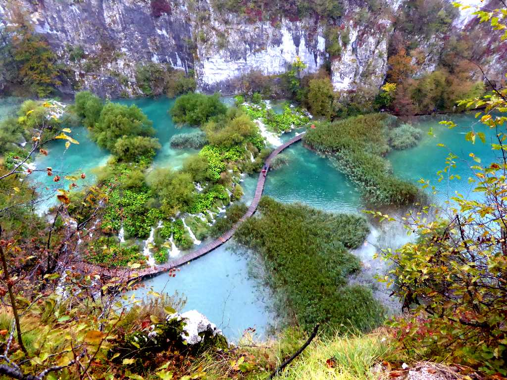
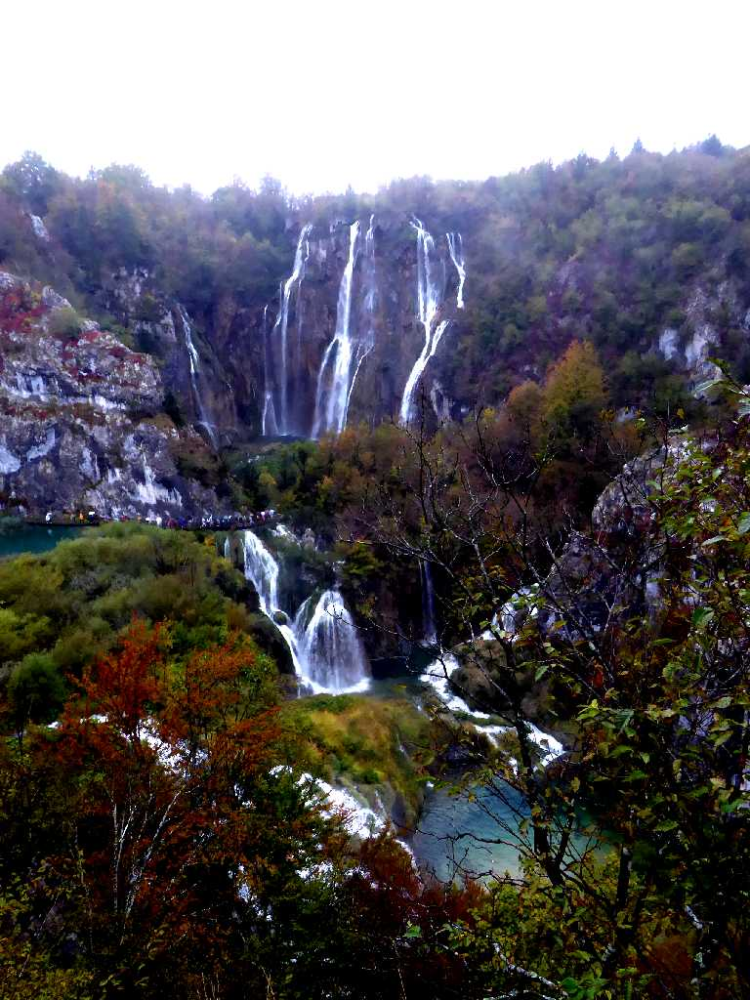
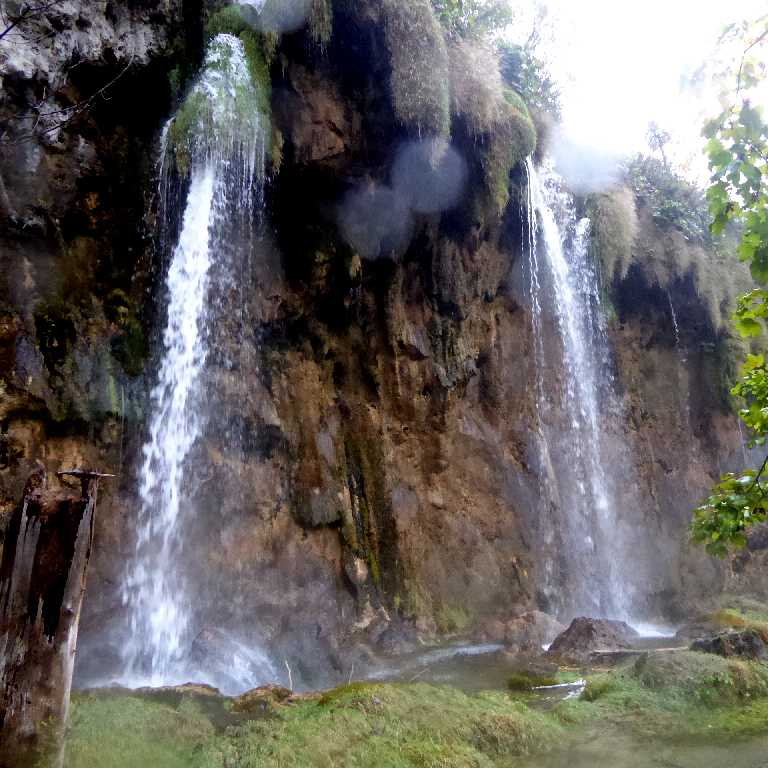
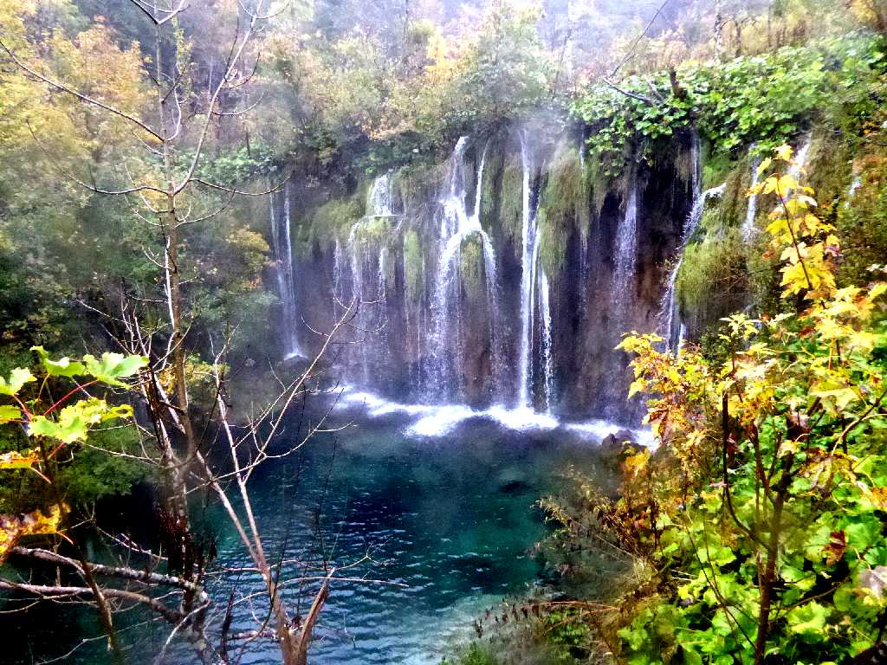
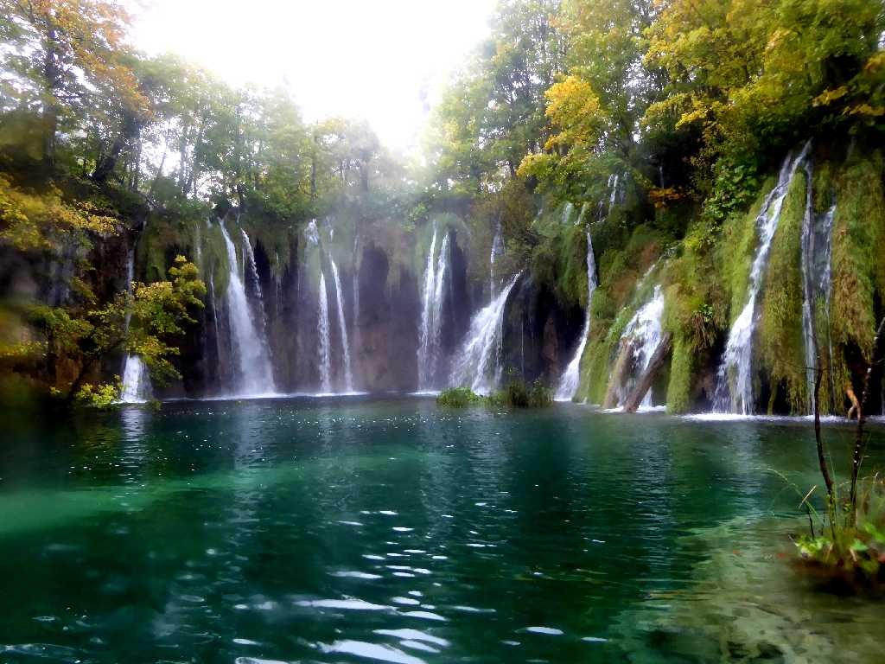
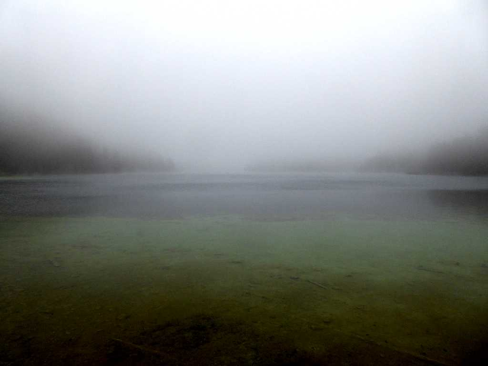
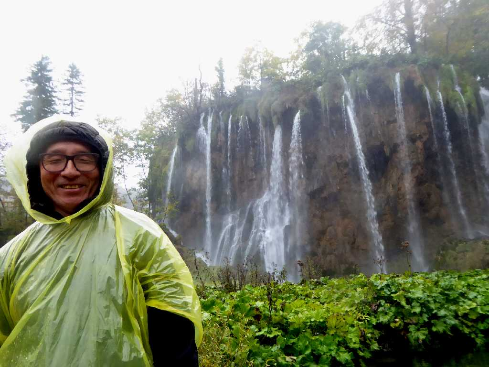
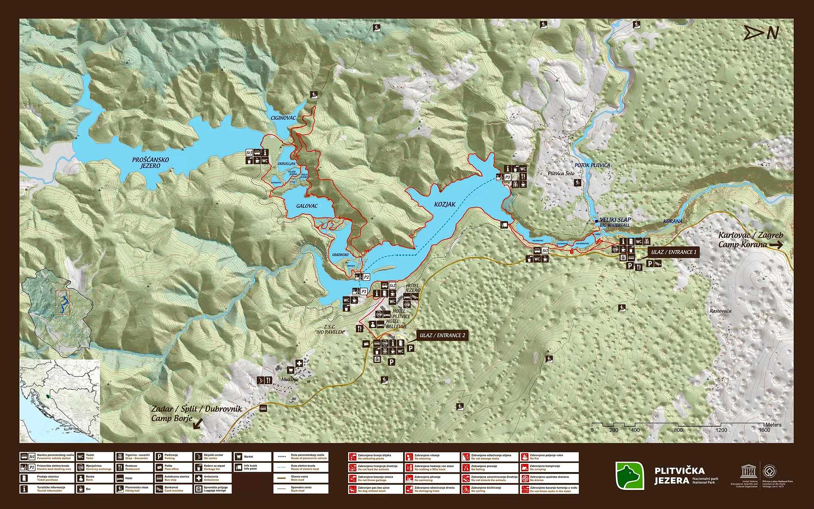

Korana Nacionalni park Plitvička jezera
１６の湖と多くの滝を有するクロアチアで最も美しい自然保護区のプリトヴィッチェ湖群国立公園

Veliki Slap
落差７８mあるプリトヴィッチェ湖群で最も大きな下湖群大滝
Kozjak

Mali Prštavac

Milino Jezero

Galovački Buk
グルバス湖から流れ出る落差２５mの美しいガロヴァチュキプク

Prošćansko Jezero
上湖群のプロシュチャンスコ湖に着いたが霧の中で散策中止

October 11 2016 Nacionalni park Plitvička jezera
１日大雨が止まずカッパで木道などを周遊
